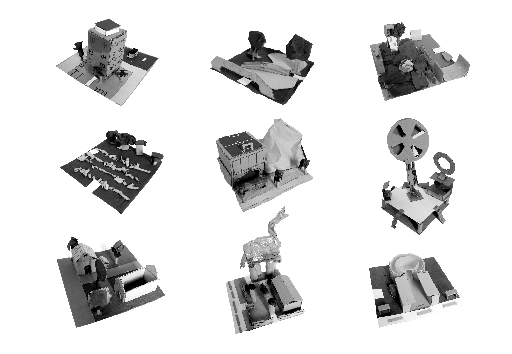
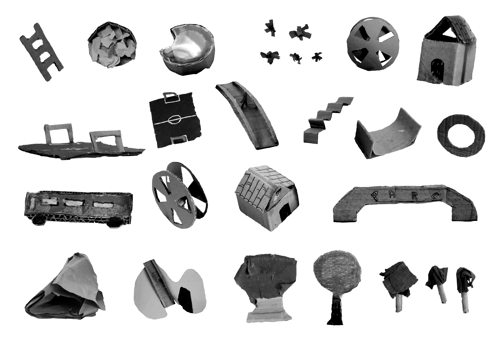
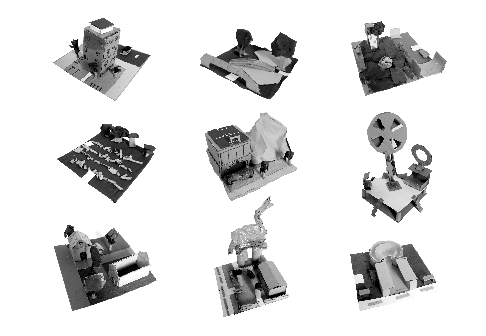
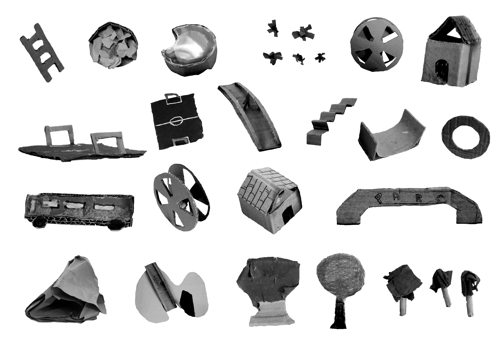
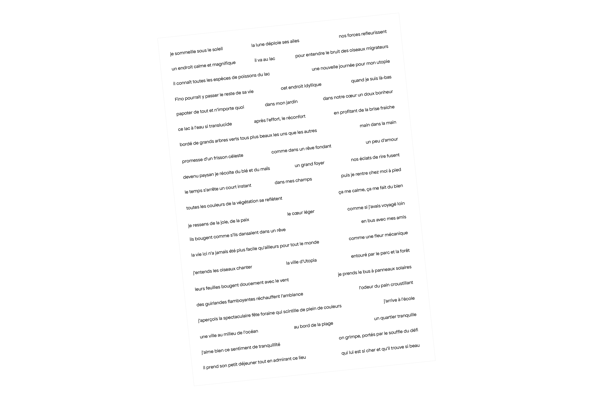
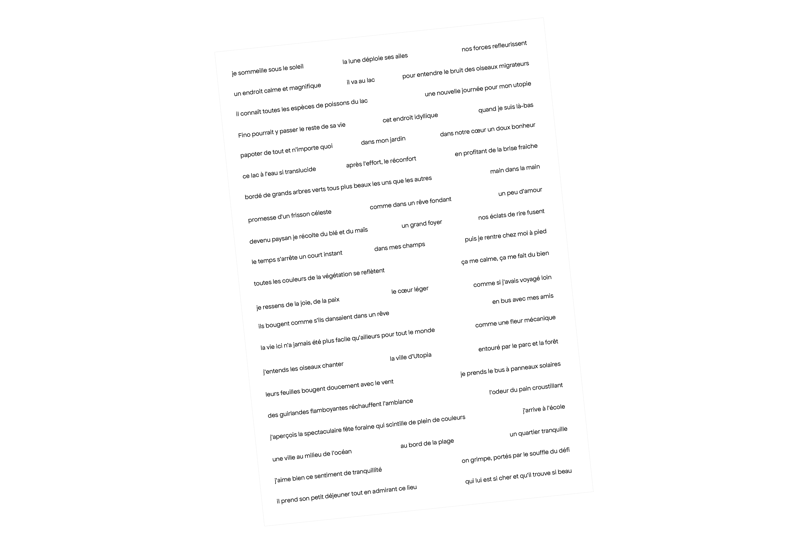

Visions du futur
Visions du futur est une édition réalisée avec les élèves de 3e du lycée agricole de Montauban-Capou. Elle regroupe les utopies imaginées par les élèves durant le projet Utopia Lab' : quand les jeunes réinventent les utopies sociales et urbaines, mené par la Maison de l'Architecture Occitanie-Pyrénées.
Il a été mis en image par les élèves dans le cadre d'ateliers de photographie, de dessin et de collage, qui se sont déroulés entre février et juin 2025.
L'édition a été imprimé en riso par l'atelier ChloTour, à Toulouse
Visions du futur a bénéficié d'un financement spécifique attribué par les DRAC et DRAAF Occitanie à travers le projet Spray.


 



 
